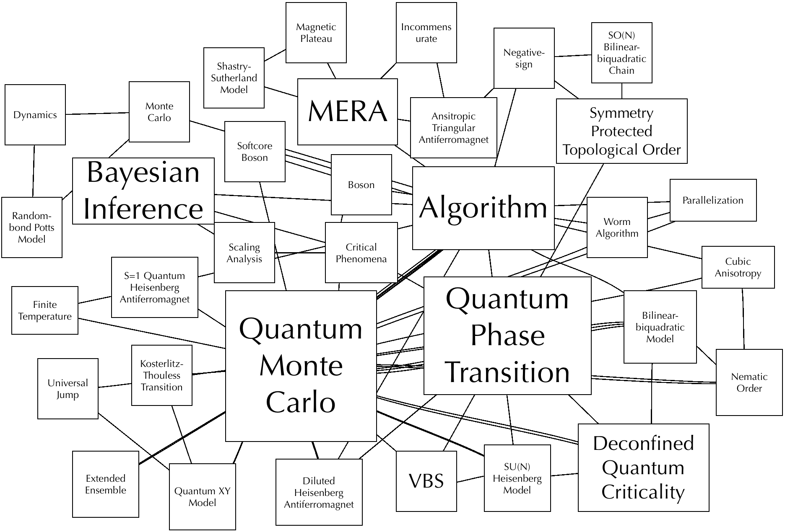

Open source code
Toolkit of Bayesian Scaling Analysis
Reference application codes of a new scaling analysis method of critical phenomena based on Bayesian inference.
Demo Learn MoreResearch Activities
 orcid.org/0000-0003-0231-7880
orcid.org/0000-0003-0231-7880Google Scholar Citations of Kenji Harada
Papers You can find almost preprints of the following papers in arXiv.org. Example: a url link.
- Kenji Harada and Naoki Kawashima:
Entropy Governed by the Absorbing State of Directed Percolation,
Physcal Review Letters 123 (2019) 090601.
DOI: 10.1103/PhysRevLett.123.090601 - Kenji Harada:
Entanglement branching operator,
Physcal Review B 97 (2018) 045124.
DOI: 10.1103/PhysRevB.97.045124 - Tsuyoshi Okubo, Kenji Harada, Jie Lou, Naoki Kawashima:
SU(N) Heisenberg model with multicolumn representations,
Physcal Review B 92 (2015) 134404.
DOI: 10.1103/PhysRevB.92.134404 - Kenji Harada:
Kernel method for corrections to scaling,
Physcal Review E 92 (2015) 012106.
DOI: 10.1103/PhysRevE.92.012106 - Takafumi Suzuki, Kenji Harada, Haruhiko Matsuo, Synge Todo, and Naoki Kawashima:
Thermal phase transition of generalized Heisenberg models for SU(N) spins on square and honeycomb lattices,
Physical Review B 91 (2015) 094414.
DOI: 10.1103/PhysRevB.91.094414 - Kouichi Okunishi and Kenji Harada:
Symmetry-protected topological order and negative-sign problem for SO(N) bilinear-biquadratic chains,
Physical Review B 89 (2014) 134422.
DOI: 10.1103/PhysRevB.89.134422 - Akiko Masaki, Takafumi Suzuki, Kenji Harada, Synge Todo, and Naoki Kawashima:
Parallelized Quantum Monte Carlo Algorithm with Non-local Worm Updates,
Physical Review Letters 112 (2014) 140603.
DOI: 10.1103/PhysRevLett.112.140603 - Kenji Harada, Takafumi Suzuki, Tsuyoshi Okubo, Haruhiko Matsuo, Jie Lou, Hiroshi Watanabe, Synge Todo, and Naoki Kawashima:
Possibility of Deconfined Criticality in SU(N) Heisenberg Models at Small N,
Physical Review B 88 (2013) 220408(R).
DOI: 10.1103/PhysRevB.88.220408 - Jie Lou, Takafumi Suzuki, Kenji Harada and Naoki Kawashima: Study of the Shastry Sutherland Model Using Multi-scale Entanglement Renormalization Ansatz, arXiv:1212.1999.
- Kenji Harada:
Numerical study of incommensurability of the spiral state on spin-1/2 spatially anisotropic triangular antiferromagnets using entanglement renormalization,
Physical Review B 86 (2012) 184421.
DOI: 10.1103/PhysRevB.86.184421 - Kenji Harada:
Bayesian inference in the scaling analysis of critical phenomena,
Physical Review E 84 (2011) 056704.
DOI: 10.1103/PhysRevE.84.056704 - Kenji Harada and Yuto Kuge:
Diffusion in the Continuous-Imaginary-Time Quantum World-Line Monte Carlo Simulations with Extended Ensembles,
Journal of the Physical Society of Japan 77 (2008) 013001-1 - 013001-4.
DOI: 10.1143/JPSJ.77.013001 - Kenji Harada, Naoki Kawashima and Matthias Troyer:
Dimer-Quadrupolar Quantum Phase Transition in the
Quasi-One-Dimensional Heisenberg Model with Biquadratic Interaction,
Journal of the Physical Society of Japan 76 (2007) 013703-1 - 013703-4.
DOI: 10.1143/JPSJ.76.013703 - (INVITED REVIEW PAPER) Naoki Kawashima and Kenji Harada:
Recent Developments of World-Line Monte Carlo Methods,
Journal of the Physical Society of Japan 73 (2004) 1379 - 1414.
DOI: 10.1143/JPSJ.73.1379 (FREE) - Jurij Smakov, Kenji Harada and Naoki Kawashima: Quantum
Monte Carlo algorithm for softcore boson systems, Physical
Review E 68 (2003) 046708.
DOI: 10.1103/PhysRevE.68.046708 - Kenji Harada, Naoki Kawashima and Matthias Troyer: Neel and
Spin-Peierls Ground States of Two-Dimensional SU(N) Quantum
Antiferromagnets, Physical Review Letters 90 (2003) 117203.
DOI: 10.1103/PhysRevLett.90.117203 - Kenji Harada and Naoki Kawashima: Coarse-grained
loop algorithms for Monte Carlo simulation of quantum spin
systems, Physical Review E 66 (2002) 056705; ibid.
67 (2003) 039903(E).
DOI: 10.1103/PhysRevE.66.056705 - Kenji Harada and Naoki Kawashima: Quadrupolar order in
isotropic Heisenberg models with biquadratic interaction,
Physical Review B 65 (2002) 052403.
DOI: 10.1103/PhysRevB.65.052403 - C. Yasuda, S. Todo, K. Harada, N. Kawashima, S. Miyashita and
H. Takayama: Classical correlation-length exponent in the
nonuniversal quantum phase transition of a diluted Heisenberg
antiferromagnet, Physical Review B 63 (2001) 140415(R).
DOI: 10.1103/PhysRevB.63.140415 - Kenji Harada and Naoki Kawashima: Loop Algorithm for
Heisenberg Models with Biquadratic Interaction and Phase
Transitions in Two Dimensions, Journal of Physical Society of
Japan 70 (2001) 13-16.
DOI: 10.1143/JPSJ.70.13 - He-Ping Ying and Kenji Harada: Short-time dynamics and
magnetic critical behavior of the two-dimensional rand-bond Potts
model, Physical Review E 62 (2000) 174-178.
DOI: 10.1103/PhysRevE.62.174 - S. Todo, C. Yasuda, K. Kato, K. Harada, N. Kawashima, S. Miyashita, H. Takayama:
Quantum phase transition of two-dimensional diluted Heisenberg antiferromagnet,
Progress of Theoretical Physics Supplement 138 (2000) 507-512.
DOI: 10.1143/PTPS.138.507 - K. Kato, S. Todo, K. Harada, N. Kawashima, S. Miyashita and
H. Takayama: Quantum phase transition of the randomly diluted
Heisenberg antiferromagnet on a square lattice, Physical Review
Letters 84 (2000) 4204-4207.
DOI: 10.1103/PhysRevLett.84.4204 - S. Todo, K. Kato, H. Takayama, K. Harada, N. Kawashima, S. Miyashita:
Quantum Monte Carlo study of site-diluted Heisenberg antiferromagnet on a square lattice,
International Journal of Modern Physics C 10 (1999) 1399-1407.
DOI: 10.1142/S0129183199001170 - Kenji Harada: Numerical Study of Quantum Spin Models by
Loop Algorithm, Doctoral Thesis, Kyoto University (1998).
DOI: 2433/77874 - Kenji Harada and Naoki Kawashima: Kosterlitz-Thouless
transition of quantum XY model in two dimensions, Journal of
Physical Society of Japan 67 (1998) 2768-2776.
DOI: 10.1143/JPSJ.67.2768 - Kenji Harada, Matthias Troyer and Naoki Kawashima: The
Two-Dimensional S=1 Quantum Heisenberg Antiferromagnet at
Finite Temperatures, Journal of Physical Society of Japan
67 (1998) 1130-1133.
DOI: 10.1143/JPSJ.67.1130 - Kenji Harada and Naoki Kawashima: Universal jump in
helicity modulus of the two-dimensional quantum XY model,
Physical Review B 55 (1997) 11949(R)-11952(R).
DOI: 10.1103/PhysRevB.55.R11949
Proceedings
- Kenji Harada,
"Tensor Network Studies of Quantum Frustrated Magnets",
JPS Conf. Proc. 3 , 014031 (2014) [7 pages],
Proceedings of the International Conference on Strongly Correlated Electron Systems (SCES2013).
DOI: 10.7566/JPSCP.3.014031 - Mitsuaki Tsukamoto, Kenji Harada, Naoki Kawashima,
"Quantum Monte Carlo Simulation of S=1/2 Heisenberg model with Four Spin Interaction",
Proceedings of the 25th International Conference on Low Temperature Physics (Amsterdams, The Netherlands, 2008), Journal of Physics: Conference Series 150 (2009), 042218. - Kenji Harada, Naoki Kawashima and Matthias Troyer,
"Phase Diagram of the S=1 Bilinear Biquadratic Model",
Proceedings of The 24th International Conference on Low Temperature Physics(LT24) (Florida, USA, 2005), 850 (2006), 1085-1086 (The AIP Conference Proceedings Series). - Kenji Harada,
"Quantum World-line Monte Carlo Method with Non-binary Loops and Its Application",
Proceedings of The 18th Annual Workshop on Recent Developments of Computer Simulation Studies in Condensed Matter Physics (Athens, USA, 2005), 105 (2006), 13-26 (Springer Proceedings in Physics). - Kenji Harada and Naoki Kawashima,
"Quadrupolar order in the quantum XY model with cubic anisotropy",
Order and Disorder in Quantum Spin Systems: Proceedings of the 16th Nishinomiya Yukawa Memorial Symposium and the Yukawa Institute for Theoretical Physics Workshop on Order, Disorder and Dynamics in Quantum Spin Systems, Progress of Theoretical Physics Supplement 145 (2002) 194-199.
DOI: 10.1143/PTPS.145.194
Talks
-
(INVITED TALK)"Entanglement branching operator",
Novel Quantum States in Condensed Matter 2017, Nov. 6, 2017 (YITP, Kyoto, Japan). -
(INVITED TALK)"General Entanglement Branching in a Tensor Network",
Fourth Workshop on Tensor Network States: Algorithms and Applications, Dec. 14, 2016 (National Center for Theoretical Sciences, Hsinchu, Taiwan). -
(INVITED TALK)"Branching and tensor network",
International Workshop on Tensor Networks and Quantum Many-Body Problems (TNQMP2016), June 27, 2016(ISSP, Kashiwa, Chiba). - (INVITED TALK)"Deconfined quantum criticality in two-dimensional SU(N) Heisenberg models",
Symposium "The K computer project for condensed matther physics" in the JPS 70th Annual Meeting, March 22, 2015 (Waseda University) (Japan). - "Quantum Monte Carlo study of Quantum Criticality on SO(N) Bilinear-biquadratic Chains",
International Workshop on New Frontier of Numerical Methods for Many-Body Correlations ― Methodologies and Algorithms for Fermion Many-Body Problems, Feb. 18, 2015 (Hongo Campus, The University of Tokyo) (Japan). - (INVITED TALK)"Quantum Monte Carlo study of Quantum Criticality on SO(N) Bilinear Biquadratic Chains",
the 9th International Conference on Computational Physics (ICCP9), Jan. 07, 2015 (National University of Singapore) (Singapore). - (INVITED TALK)"MERA tensor network and its application on quantum frustrated magnets",
10sor network workshop --- Field 2x5 joint workshop on new algorithms for quantum manybody problems ---, Nov. 25, 2014, (Kashiwa Future Center, Kashiwa, Chiba) (Japan). - "Possibility of Deconfined Criticality in SU(N) Heisenberg Models at Small N",
the YITP long-term Workshop "Novel Quantum States in Condensed Matter 2014" (NQS2014), Nov. 17, 2014(YITP, Kyoto university, Kyoto) (Japan). - (INVITED TALK)"Deconfined quantum criticality in SU(N) Heisenberg models: Finite size scaling analysis based on Bayesian inference",
Taipei Tensor Network Workshop 2013, Dec. 4, 2013 (National Taiwan University, Taipei)(Taiwan). - (INVITED TALK)"Numerical study of quantum frustrated magnets using entanglement renormalization",
International Workshop on Cooperative Quantum Dynamics and Its Control (CQDC'12), October 30, 2012 (Jeulich super computer center, Jeulich) (Germany). - "Numerical study of incommensurability of the spiral state on spin-1/2 spatially anisotropic triangular antiferromagnets using entanglement renormalization",
Conference on Computational Physics (CCP2012) for Physics, Chemistry, Biology, Engineering and related academic fields and industrial applications, October 15, 2012 (Kobe) (Japan). - (INVITED TALK)"Bayesian Inference in the Scaling Analysis of Critical Phenomena",
International Workshop on Recent Developments of Studies on Phase Transitions 2012, June 19, 2012 (University of Tokyo) (Japan). - "Magnetic Structure of Ground States in Spatially Anisotropic Triangular Antiferromagnets",
the 26th Nishinomiya-Yukawa Memorial International Workshop "Novel Quantum States in Condensed Matter 2011 (NQS2011)", November 8, 2011 (YITP, Kyoto University) (Japan). - (INVITED TALK)"Entanglement renormalization
on the triangular lattice",
New Development of Numerical Simulations in Low-Dimensional Quantum Systems: From Density Matrix Renormalization Group to Tensor Network Formulations, Oct. 2010 (YITP, Kyoto University) (Japan). - (INVITED TALK)"Entanglement renormalization
of quantum frustrated magnets",
Japan-Swiss Joint Workshop: New Trends in Theory of Correlated Materials, Aug. 2010 (Chiba, Japan). - (INVITED TALK)"Multi-scale Entanglement Renormalization on a Triangular Lattice",
Miniworkshop on Tensor Network Based Numerical Methods (Numerical Methods in Strongly Correlated Physics), May 28, 2010 (Nathional Center for Theoretical Sciences, National Tsing Hua University) (Hsinchu, Taiwan). - "Quadrupolar order in the bilinear-biquadratic model",
May 25, 2010 (Academia Sinica) (Taipei, Taiwan). - (INVITED TALK)"Multi-scale entanglement
renormalization of the spin-1/2 Heisenberg model on a triangular
lattice",
Workshop on Matrix Product State Formulation and Density Matrix Renormalization Group Simulations (MPS and DMRG), August 13, 2009 (Oxford Kobe Institute) (Kobe, Japan). - "Quantum Monte Carlo simulations of quantum S=1 spin models with bi-quadratic interactions",
Supercomputing in Solid State Physics 2009, February 18, 2009 (ISSP, Univ. of Tokyo) (Kashiwa, Japan). -
"Monte Carlo Study of Quantum Phase Transition in
the Quasi-One-Dimensional SU(N) model",
Symposium "Topological Aspects of Solid State Physics" (Poster), June 24, 2008 (YITP, Kyoto Univ.). -
"Monte Carlo Study of Quantum Phase Transition in
the Quasi-One-Dimensional SU(N) model",
The 1st International Conference of the Grand Challenge to Next-Generation Integrated Nanoscience (Poster), June 6, 2008 (ISSP, Univ. of Tokyo) (Kashiwa, Japan). -
"Quantum Phase Transition between Two Ordered Phases with Unrelated Symmetries",
International Workshop and Symposium on Computational Approaches to Quantum Critical Phenomena, August 9, 2006 (ISSP, Univ. of Tokyo) (Kashiwa, Japan). -
"Loop Algorithm with Non-binary Loops",
International Workshop and Symposium on Computational Approaches to Quantum Critical Phenomena, August 2, 2006 (ISSP, Univ. of Tokyo) (Kashiwa, Japan). -
"Phase Diagram of the S=1 Bilinear Biquadratic Model",
The 24th International Conference on Low Temperature Physics(LT24) (Poster), August 15, 2005 (Florida, USA). -
(INVITED TALK)"Quantum World-line Monte Carlo Method with Non-Binary Loops",
The 18th Annual Workshop on Recent Developments of Computer Simulation Studies in Condensed Matter Physics, March 8, 2005 (Univ. of Georgia) (Athens, USA).